[in Lua] example3_1.lua
[in Lua] example3_1.lua Until now we have seen two different controls: labels and buttons. Labels can show text or images to the user but are not designed for interaction. Buttons allow the user to trigger an event by pressing a mouse button. But none allow the user to insert any data into our application. To do that,we will use a new control called IupText. It creates an editable text field and has a lot of different attributes available. We will be interested in one in particular for now: MULTILINE. MULTILINE turns the IupText into an editable text field that supports many lines, which is mandatory to build a simple notepad.
Our starting code for the simple notepad should be as follows.
Example Source Code
[in C] example3_1.c
[in Lua] example3_1.lua
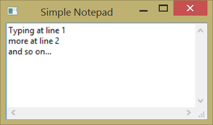
The previous code doesn't show exciting news except by the IupText declaration and the call to IupSetAttribute to set the IupText as a MULTILINE. The default value is "NO", try to comment this line and see what happens.
Notice that the SIZE attribute of the dialog was also set. Since the IupText is a control that does not fit its size to its contents, we have to set an initial size for the dialog, or else the result would be a very small dialog. We use a simple size specification that is a quarter of the screen size in both dimensions. The SIZE attribute will also work as a minimum size, so we reset the USERSIZE attribute, after the dialog is shown, to avoid this limitation. Try to comment this line and check out how the dialog interactive resize behaves.
With a few lines of code, we build an application where the user can type a huge text. But, if you type a huge text, you probably would like to save it, and unfortunately our applications offers no such feature. We will handle this in the next sections.
Almost all applications offer a menu where the user can load files, save files, use the clipboard and do a lot of other stuff with his data. IUP also offers this resource to the applications. Menus are divided into four different interface elements: IupItem, IupMenu, IupSeparator, IupSubmenu.
IupItem creates a single item of the menu interface element. When selected, it generates an action.
IupSeparator creates a horizontal line that will appear between two menu items. It is normally used to divide and arrange different groups of menu items.
IupSubmenu creates an item that, when selected, opens another menu.
IupMenu creates the menu element by itself as a list of elements. An IupMenu can include any number of the other 3 types of menu interface elements: IupItem, IupSubmenu and IupSeparator. Any other type of interface element inserted in a menu will be an error.
Let's add a menu with a few items in our example.
Example Source Code
[in C] example3_2.c
[in Lua] example3_2.lua
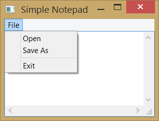
Now our example has a few menu element handlers and declarations. Also, we used our exit callback to be called when the item_exit menu item is selected. The next line shows the composition of an IupMenu called file_menu. Note that the menu items are passed in order of appearance, which means that item_open will appear above item_save and so on. There is also an IupSeparator dividing our file menu in two parts, the first takes items that deal direct with files, like open and save, and the second takes the exit item. It's not mandatory to have an IupSeparator in your menu. This is used just to keep things more organized. Next line is a little tricky. We created a submenu to store all of our items. Why not use file_menu directly? We could, but it would be used as main menu and would end up being the only menu available in our application. It's a good practice to separate menus in submenus and then pass these submenus as items of the main menu. By doing so, an application could have a file menu, a search menu, a help menu, and others as items of the main menu, as you can see in the main menu declaration on the next line.
At last, once we are done building the main menu, we must set the MENU attribute of the main dialog as the menu we have just created. But since it is neither a string nor a number, we must use a different function to do this association, which is called IupSetAttributeHandle.
You should notice that the exit menu item works fine, as we set the Exit menu item action callback, but Open and Save still don't work. That's because we didn't set any callback for them. Those callbacks will use another IUP feature, which is the subject of our next section.
In the previous section, we added a file open and a file save menu items, but they had no callbacks associated. That's because we will use new IUP resources to deal with file handling. These resources are called Pre-defined Dialogs.
Some dialogs are commonly found in a lot of different applications like file selection dialogs, font selection dialogs, color selection dialogs, etc. It would be annoying to have to build the same dialog again every time we need to select a file, or to select a color or a font. So, IUP provides pre-defined dialogs with all the necessary controls to deal with these common tasks.
We will update our last example to handle file input/output and to make use of these IUP pre-defined dialogs.
Example Source Code
[in C] example3_3.c
[in Lua] example3_3.lua
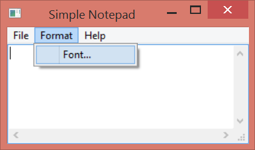
We will need to access the multitext control from inside the menu callbacks. There are many ways to do that; the simplest one is to declare it as a global variable. We will do that to illustrate this example, but this is not recommended. In the next example, we will show you how to not use a global variable to obtain the same results.
Now we have interesting new functions. First, let's take a look at the new callback called open_cb. This callback will handle the file opening when the user clicks on the Open menu item. For this we will use a IUP predefined dialog called IupFileDlg. This dialog is a standard file- handling dialog with all the features that we need to select a file from the file system, and it will also save a lot of work. Inside the callback we create our IupFileDlg, and set it to be an "open" dialog with attribute DIALOGTYPE. Also we set EXTFILTER attribute to "Text Files|*.txt|All Files|*.*|", since we want our application to handle text files but we leave the option for listing other files.
Now the program calls IupPopup, which is a function similar to IupShow, but it restricts the user interaction only in the specified dialog. It is the equivalent of creating a Modal dialog in some toolkits. Its arguments are our file dialog Ihandle followed by x and y coordinates that we defined as the center of the screen with IUP_CENTER.
Then we have a conditional test in which we get the value of filedlg STATUS with IupGetInt. Why not use IupGetAttribute instead? That's because IupGetAttribute returns attributes as strings, but we know that STATUS is an integer so we can simplify our status check using IupGetInt.
Once our file dialog returns a valid status, we are able to recover the name of the selected file using IupGetAttribute to retrieve the VALUE attribute. Then we read the file using a simple function and fill in its contents on the multitext control by using the IupSetStrAttribute function to set its VALUE attribute. We can not use the IupSetAttribute function, because our C string returned by IupGetAttribute is a dynamically allocated pointer. Therefore IupSetStrAttribute will make sure that the string is duplicated internally and not dependent on the given pointer.
Now we are done with this dialog. You can simply call IupDestroy to remove filedlg from memory, because we will not need it anymore.
Next there is another callback, saveas_cb, which will select a file name for saving the content of a file. It is very similar to open_cb, but DIALOGTYPE is set to SAVE, so this time it will select a file name for saving. In this case the filename can be also for a new file, if an existing file then the user will be notified of overwriting so it can cancel and start over. After selecting the filename we are going to save the multitext contents to the file.
Now comes the font_cb callback that, as you may have already guessed, will call a predefined dialog to select a font. To do that, we use IupFontDlg instead of IupFileDlg. To set the font, just change the FONT attribute in the multitext control.
The next callback is about_cb, which does nothing special, just calls IupMessage to display a text to the user.
The following lines don't show anything new, except for the new callbacks registration. But notice that we added "..." to the text of the menu items in which a dialog is open. This is not mandatory, but is highly recommended by common User Interface Guidelines.
Finally, we now have a brand new text editor using IUP. But what happens if the dialog that your application needs is not provided by IUP as a predefined dialog? That will be the subject of our next section.
We saw in the previous section that IUP provides predefined dialogs that can be used by the applications to save a lot of developing time. But if the dialog your application needs is not one of IUP's predefined dialogs, then it's time to built your own dialog. The good news is that you have already made this when building your main dialog. The tricky part here is how to handle more than one dialog at the same time.
For this we will add two new items to our Edit menu: Find and Go To. Find will search the multitext contents while looking for a string and highlight it when found. It will search for this string many times, and the search can also be case sensitive. Go To will position the caret to a specific line in the text.
Example Source Code
[in C] example3_4.c
[in Lua] example3_4.lua
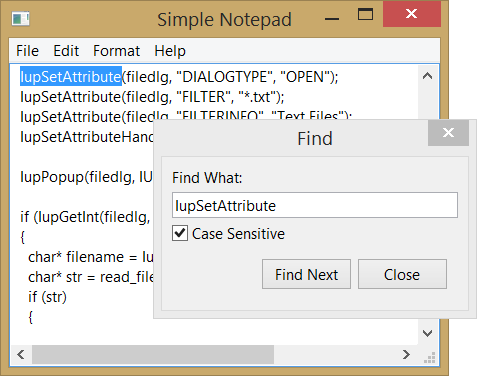
The first change is the inclusion of two utility functions (str_compare and str_find) that will be used to implement Find, and which are not the object of this tutorial. If you want to understand what is inside these functions, take a closer look into the code.
You will notice that several functions had their names changed from the previous example code. We did that to illustrate the importance of function nomenclature in a larger project, so that several callbacks can be easily associated with their respective control. For instance, open_cb became item_open_action_cb, saveas_cb became item_saveas_action_cb, and so on.
Allow me to make a jump in our code and please refer now to the item_find_action_cb function. This callback, despite being almost at the end of the code, is responsible for building one of our custom dialogs. In this dialog, we will use some elements that we have already seen in previous sections: a text field to receive the string that the user wants to find, a button to find the next occurrence of this string, a button to close our find dialog, and two new IUP elements: IupToggle and IupFill.
IupToggle is a two-state (on/off) button that, when selected, execute a callback. Toggles are normally used to set flags. In this case, we used it to allow the user to decide if the search will be case sensitive or not.
IupFill is a very peculiar element. It is, as the name says, used to fill blank spaces inside our dialog. In other words, it positions and aligns IUP elements. The best way to understand IupFill is to think of it as a coil spring. If you put an IupFill inside an IupHbox, it will expand between the two elements, pushing one to the left and the other to the right. Or if you put it in an IupVbox, above a element, it will push the element all the way down. But IupFill also has a SIZE attribute, that can be used to control how much space will be taken. With experience we will find the correct way to define SIZES for IupFill and for other elements as well. In our case, IupFill is being used to push the buttons Find Next and Close to the right, inside our hbox.
Note that our new dialog has a lot of new parameters set. DIALOGFRAME will remove minbox, maxbox, and it will resize from the corner of the dialog. This will provide a reduced functionality and a standard dialog box appearance. DEFAULTENTER defines a button to be activated when the users presses ENTER, in this case it will have the same effect as pressing the next_bt button. DEFAULTESC works the same way for the ESC key by activating the close_bt button. Next the attribute PARENTALDIALOG sets the dialog that holds item_find (our main dialog) as the parent of our new dialog, by using IupGetDialog, which returns the handle of the dialog that contains the element passed as parameter. This will maintain the Find dialog always on top of the main dialog, even if we change the focus to the main dialog. It will also allow us to set the find dialog position at the center of the parent dialog.
In the next two lines, we use custom attributes to store application pointers. Each IUP element can hold as many custom attributes as you want. If your application needs to store some information to be retrieved later, you can just set it as we are doing here. We created a new attribute called MULTITEXT in the dialog to store the multitext element pointer and make it available to other callbacks. Doing this, we avoid the global attribute used in the previous example. Also, we created another new attribute called FIND_DIALOG in the element find_item, so we will be able to reuse this dialog. Everytime this function is called, the dialog is not created again, since it is created only once.
Next we show our dialog using IupShowXY and pass IUP_CURRENT to it. At first, this will center the dialog according to its parent (main dialog as we defined above). Next time it will reuse the last position, since the dialog will not be destroyed when closed.
Now that we have built the Find dialog, it is time to write the callbacks that will effectively do the job to find the string inside our multitext.
Let's turn our attention to the find_next_action_cb callback. This callback is responsible for finding the next occurrence of our string inside the multitext and it has a lot new function calls. We call to IupGetDialogChild, which is a function that returns the identifier of the child element that has the NAME attribute in the same dialog hierarchy. We use this to retrieve the multitext handle. This is a more elegant form to retrieve handles, instead of using a custom attribute or making a global variable, but it only works for the same dialog. Next we retrieve the text to be found and the case sensitive flag from the respective controls. The search is performed, and if the result is positive, we will save the last found position in a custom attribute, and call IupSetFocus. When we showed our Find dialog, we moved the focus from our multitext to the new dialog. This function restors the focus to the multitext. We then select the text on the multitext. Next we find two calls to IupTextConvertPosToLinCol and IupTextConvertLinColToPos. These are used to compute the position we use to scroll the multitext, so the selection becomes visible.
Beside next_bt, find dialog also has close_bt, and it also demands a callback. Find_close_action_cb closes the Find dialog. In this callback, we made a call to IupHide. When a dialog is hidden, it is not destroyed, so you can show it again.
The Go To dialog will work in the same way. If you have understood how to create the Find dialog, you should be able to build the Go To dialogs.
Now that we saw how to use predefined dialogs or how to build our own dialogs, lets see how to implement two other resources present in many other applications: toolbars and statusbars.
Toolbars are a set of buttons, usually positioned side by side in the top of the dialog, just bellow the menu. To build our toolbar, we will use the attribute IMAGE of IupButton. As in predefined dialogs, IUP also offers a series of predefined images to be used with buttons. These images are part of an additional library called IupImageLib. To use this library, call IupImageLibOpen right after IupOpen.
Statusbars normally appear on the bottom of the dialog and usually show some information about what is happening inside the application. To build our statusbar, we will use a set of IupLabel controls arranged side by side. In our statusbar, we will be displaying the caret position in the text, and to achieve this, we will use a IupText callback called CARET_CB, which is called every time the caret position is changed.
Example Source Code
[in C] example3_5.c
[in Lua] example3_5.lua
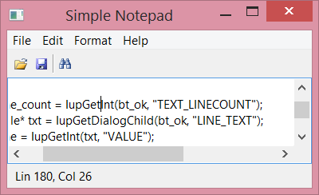
The first change, as told above, is the inclusion of multitext_caret_cb to our callbacks. In this callback, we will make use of the parameter received by the callback. First we retrieve the handle of IupLabel called lbl_statusbar using IupGetDialogChild, and then passing the handle that came as a parameter of our callback. Next, we set the label's TITLE by building a string using lin and col parameters, in which the callback provides the caret line and column position.
From this new callback, we will jump to main function where the next change appears. Just after IupOpen, you will find a call to IupImageLibOpen. This function will load the image library, so we can use its images in our toolbar.
A few lines after, we will find our lbl_statusbar declaration. This label will play the role of our statusbar. It needs the EXPAND attribute set to HORIZONTAL, so it will occupy all the horizontal space inside the vbox. Following we will see some button declarations (btn_open, btn_save and btn_find) and some calls to IupSetAttribute setting each button's image. The images names can be found at the IupImageLib documentation. We then notice that our toolbar is nothing more than an IupHbox containing those buttons. Note, a few lines after, that we set the buttons callbacks to the same callbacks set for the respective menu items. This is feasible because the buttons do exactly the same thing as the items representing a short cut to call open, save or find. We also set the FLAT attribute for the buttons so their border is removed, and they will look like toolbar buttons. We set the CANFOCUS attribute to No for the buttons so they will not receive the keyboard focus as toolbar buttons behave.
The final change will be the inclusion of toolbar_hb and lbl_statusbar in the vbox that already had our multitext. The toolbar comes first because it is a vbox and we want it above the multitext. lbl_statusbar goes after because we want it bellow the multitext. That's all. Our application now has both a toolbar and a statusbar. In the next section, we will improve it even more by adding hot keys to our menus.
Applications that have menus always present hotkeys to its users. IUP also offers this resource. To define a hotkey, you could use IupDialog callback K_ANY. This is a callback common to a lot of IUP elements and is called when a keyboard event occur. IUP also offers a simple way that allows you to define a specific callback for the key combination you want to deal with. For example, if you want to show the file Open selection dialog when the user presses Ctrl+O, you just have to set a callback called "K_cO". Keyboard Codes shows a complete table with all keyboard codes available in IUP.
Example Source Code
[in C] example3_6.c
[in Lua] example3_6.lua
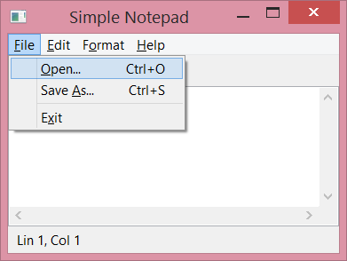
This example didn't change much. We just added "\tCtr+?" to each menu item that has a hotkey. Character "\t" will take care of aligning our hotkey text to the right, and the rest of the string will tell the user which key combinations to press. Note that "?" should be replaced by the key you want.
A few lines after, we did a few calls to IupSetCallback using key combinations as callback names, as mentioned above, to deal with key pressed events. That's all we need to change to include hotkeys in our application.
Since we are improving the user keyboard experience, there is another feature that we can use to aid users. Using the ampersand (&) character in the menu item text, we define a key that can activate the menu item. The next character following the ampersand will be the key. The main menu is reached using the Alt+key combination, for instance Alt+F will activate the File menu. Once the menu is opened, use the 'O' key to activate the file Open menu item. Another example is the Alt+F then 'X' key combination to exit the application; many applications have this key combination enabled.
Finally we add the TIP attribute for the toolbar buttons so they will also show the key combination that activate its feature.
Many text editors offer a menu item that holds a list of recent files. We will use an IUP resource called IupConfig to implement this list and also store other configuration variables. IupConfig implements a group of functions to load, store and save application configuration variables. For example: the list of Recent Files, the last position and size of a dialog, last used parameters in dialogs, etc. Each variable has a key name, a value and a group that it belongs to.
Its important to remember that using IupConfig demands the inclusion of header file iup_config.h.
Example Source Code
[in C] example3_7.c
[in Lua] example3_7.lua
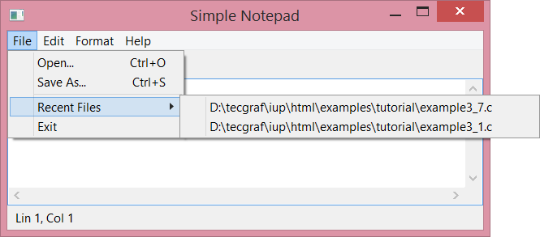
Note that in this new example we have included the iup_config.h header as
advised above. We will start this analysis from our main function. After
creating a handle for our config by calling
IupConfig, we set the
attribute APP_NAME. This attribute defines the name of our configuration file.
In UNIX, the filename will be "<HOME>/.<APP_NAME>", where "
After that comes a call to IupConfigLoad that will load our config file at startup. This function combined with the IupConfigSave function, which we will see later, will allow our configuration variables to be persistent between different application executions.
Following, a few lines bellow, we create the recent_menu that will hold our recent items inside. You will see that it works as any other menu creation, except by the fact that we will not add any menu items. They will be provided by a function that we will see soon. We positioned our recent_menu above the item_exit menu item and bellow the IupSeparator.
After the menu is created, there is call to IupConfigRecentInit. This function is responsible for initializing the recent_menu items from the configuration file entries. The item_recent_cb callback will be called when the user selects a file in the recent list. This function also defines the number of recent files that will be stored and displayed. In our example, we choose to store 10 files. Also note that both item_open_cb and item_saveas_cb should change the recent files list. So a call to IupConfigRecentUpdate is necessary to maintain our recent files list updated.
Next line shows a call to IupConfigDialogShow that replaces IupShow/IupShowXY. This function will also show the dialog, but it will try to use the last position and size stored in the configuration file. It can be used for any application dialog, just use different names for each dialog.
The function IupConfigDialogClosed is used to save the last dialog position and size when the dialog is about to be closed, usually inside the dialog CLOSE_CB callback, or when the dialog is programmatically hidden. The CLOSE_CB callback is called when the user clicks on the dialog close button, usually a 'X' at the top right corner of the dialog. Here our dialog is closed by the item_exit_action_cb callback, so we decided to also use this function as the CLOSE_CB callback and to call IupConfigDialogClosed. Finally, since this callback also exists in the application we use to call IupConfigSave, it will save our configuration file. Now that it is saved, we can destroy its handle using IupDestroy.
That's all for the main function, so let's turn our attention to the item_recent_cb callback. This callback, as said before, is responsible for handling the selection of a recent file at the menu_recent. Inside it, we recover our config handle from a custom attribute in the dialog, then we get the file name from the TITLE attribute of item_recent and open it the same way we do in item_open_cb.
Next, we will find some callbacks that handle copy, cut, paste, delete and select all of the new items added to the Edit menu, and a callback to manage activation and deactivation of these items. All are very short callbacks.
item_copy_action_cb, item_paste_action_cb and item_cut_action_cb use a resource called IupClipboard, which creates an element that allows access to the clipboard. Each IupClipboard should be destroyed using IupDestroy. You can use only one for the entire application, because it does not store any data inside, or you can simply create and destroy every time you need to copy or paste, that's how we did in our notepad. The item_copy_action_cb callback retrieves the SELECTEDTEXT attribute from our multitext and sets the clipboard TEXT attribute to copy the text selection. item_paste_action_cb retrieves the clipboard TEXT attribute and insert it (paste) in the multitext, where the cursor is positioned, using the INSERT attribute. item_cut_action_cb is almost the same code as copy, except by the fact that it sets attribute SELECTEDTEXT to "", removing the selected text from the multitext. item_delete_action_cb does the same as cut, but without using the clipboard. item_select_all_cb sets the attribute SELECTION to ALL, selecting all the text inside the multitext.
Another callback was created to deal with the initialization of our new menu items. edit_menu_open_cb is associated to the edit_menu OPEN_CB callback. It will set the cut, paste, copy, and delete items as active or inactive, depending on some conditions. First, it is necessary to obtain the handles of these items. We use the NAME attribute of each item and the IupGetDialogChild function for this propose, just like we did before for the multitext. We then test if there is text available in the clipboard by calling IupGetInt(clipboard, "TEXTAVAILABLE"). It is a short way to test a boolean return value, without having to compare strings with "YES" or "NO". So, if it returns 0, it means there is no text in the clipboard, or in other words, there is nothing to paste. Then the Item paste should be disable, by setting ACTIVE to "NO". Otherwise, the user should be able to paste, and we should set ACTIVE to "YES". The other items follow the same idea, but this time checking the content of the attribute SELECTEDTEXT. If there is nothing selected, you can disable cut, copy and delete items. Otherwise, you can enable all items.
Example Source Code
[in C] example3_8.c
[in Lua] example3_8.lua
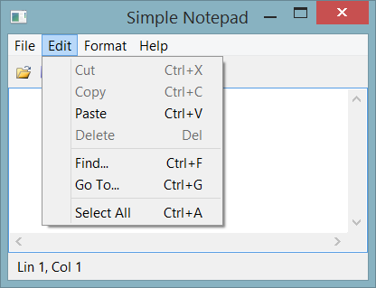
In this section, we will see a little more of file management. The example will show you how to handle drag and drop support, command line support, and how to check if the file needs to be saved before taking another action.
First we will find some new auxiliary functions called str_filetitle, new_file, open_file, save_file, saveas_file and save_check.
str_filetitle will be used to append the name of the file opened by the application to the application dialog title. new_file first retrieves the main dialog and the multitext, then sets the dialog title to "Untitled - Simple Notepad" and multitext attributes FILENAME to NULL, VALUE to "", and the new attribute DIRTY to "NO". DIRTY is a custom attribute that we created (same way we did with FILENAME) to check if the multitext has changed and has not been saved. Every time the multitext text is changed, the callback VALUECHANGED_CB, named multitext_valuechanged_cb, is called to set DIRTY as "YES". This attribute will allow us to identify if the content of the multitext has changed and needs to be saved. open_file reads the file and sets almost the same attributes as new_file, except by the fact that it uses str_filetitle to set application title with the filename, and it also sets the file content into multitext VALUE attribute. Notice that, like new_file, it also sets DIRTY to "NO". Since we have just opened the file, it doesn't need to be saved. Also, open_file calls IupConfigRecentUpdate to include the file we just opened in the recent files list. save_file calls write_file to save the current file and sets the DIRTY attribute to "NO" while saveas_file does the same but replacing the current opened file for the new edited one updating the recent list with the new file. Finally, save_check uses the DIRTY attribute to check if the file needs to be saved. We used IupGetInt to automatically convert DIRTY from "YES" or "NO" to 1 or 0. If it's 1, we then call a predefined dialog called IupAlarm to warn the user that the multitext content has changed, and it is not saved. If the user chooses button 1 - "YES", it will call our item_save_action_cb to save the file. If the user chooses button 2 ("No") save_check will returns 1 without saving and continue with the application operation, but if user chooses button 3 ("Cancel") save_check will return 0 meaning that no further action should be taken.
We then reach the callbacks section. This time we added several new callbacks. First is dropfiles_cb that will handle what happens when a file is dropped inside the application. It is a very simple callback, it simply checks if the current multitext needs to be saved with save_check, and it calls open_file to open the file that came as a parameter. What is important here is to notice that we associated this callback with two different DROPFILE_CB. One for the multitext and one for the main dialog. The reason is that the user may drop the file in any place inside the dialog. Every IUP control will call the main dialog DROPFILE_CB , except by the multiline. So, if we want the file to be opened, when it is dropped inside the multiline, it's necessary to set the multitext DROPFILE_CB callback as well.
The next one is a multitext_valuechanged_cb that, as we mentioned before, is called when the user changes the text inside multiline. It simply sets the DIRTY attribute as "YES". It is set as the multitext VALUECHANGED_CB callback in main function.
Next comes file_menu_open_cb, which is a function called when the user clicks on the file menu, but before it is displayed to the user. We will use it to enable or disable the save and the revert items, depending on the DIRTY attribute value.
We have also changed config_recent_cb, that now checks if the current multiline content needs to be saved and calls our new function open_file. Another new callback is item_new_action_cb that does the same, but calls new_file instead. item_open_action_cb has also been changed to use save_check and open_file, as well as item_exit_action_cb.
Two more callbacks were created: item_save_action_cb and item_revert_action_cb. item_save_action_cb saves the text in a file using the current filename we stored in the FILENAME attribute, without displaying the save as dialog. If there is no current filename, it calls item_saveas_action_cb, so the user can choose a file. item_revert_action_cb reopens the current file, discarding any changes made to the multiline content.
In the main function, we have new menu items: item_new, item_save, and item_revert. Also we have new buttons: btn_cut, *btn_copy, i *btn_paste, and *btn_new. Multiline has the new DIRTY attribute and two new callbacks: VALUECHANGED_CB and DROPFILES_CB. And we made a call to new_file to initialize the application state, as a new file has just been created. Also the callbacks where rearranged to appear next to its items to made the code more clear. Finally, in the next line, we use argc and argv to check if the user tried to open a file from the command line, if so, we call open_file.
That's all for file handling. Let's proceed to the next section, where we will work with IUP dynamic layout.
Example Source Code
[in C] example3_9.c
[in Lua] example3_9.lua
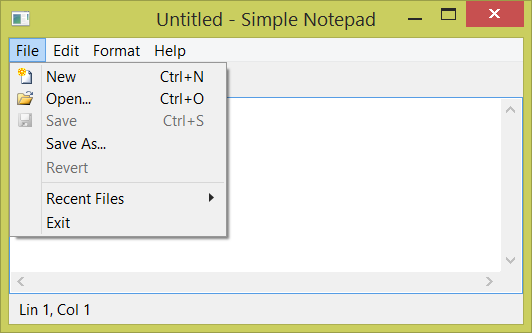
Now we would like to be able to hide and show some of the complementary dialog elements, such as the Toolbar and the Statusbar. If you simply set their VISIBLE attribute to NO, they will be hidden, but their size in the dialog layout will still be reserved, and an empty space will be displayed instead. To avoid the use of the FLOATING attribute, along with the VISIBLE attribute, they will be hidden, and its space will be used by the multitext.
To implement this feature, we added a new submenu called "View" at the main menu, with two new items. One for controlling the Toolbar visibility, and another for controlling the Statusbar visibility. And we use the IupConfig to store this selection to be persistent between different application executions.
The first change is the inclusion of the function toggle_bar_visibility that handles the changes in visibility in our toolbar and statusbar. When an item in View menu is pressed, if it was checked or, in other words, the bar is visible, set the bar FLOATING attribute to "YES", VISIBLE to "NO" and the item value to "OFF", to hide the bar. If it is not visible, do the opposite. After that, it is necessary to call to IupRefresh to recompute the dialog layout.
Next two new callbacks appear: item_toolbar_action_cb and item_statusbar_action_cb. Both callbacks are responsible for calling toggle_bar_visibility and calling IupConfigSetVariableStr to store the item state.
The next change will appear only in main function, and it will be the declaration of our new View submenu and its items, and the new callbacks associations.
Example Source Code
[in C] example3_10.c
[in Lua] example3_10.lua
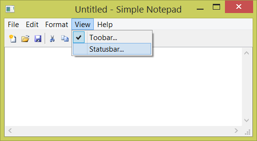
One additional feature that our text editor can have is an external help. IUP shows an external help by simply calling the IupHelp function. It will show an Internet browser in the given page, so the application can display some documentation to the user. In our example, it is just a menu item that activates the item_help_action_cb callback that calls the IupHelp function. This function shows the IUP website, but it can also show a local HTML file. In Windows, that function is even more flexible allowing opening any kind of document provided that it is associated with an application.
Example Source Code
[in C] example3_11.c
[in Lua] example3_11.lua
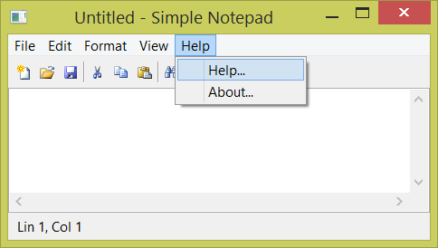
That's all for chapter three. If you reached this lines, you are able to build a simple, but fully featured Notepad application using lots of IUP resources.
During this chapter we went from 30 lines of code to 1100 lines (800 in Lua). Only for our simple notepad with file read and write, clipboard access, text search, and other features.
For our final simple notepad code, we have just added two missing features: Replace and Find Next using a hot key. Plus some code organization and comments.
There is still missing features. Any contribution to this code is welcome. Please, send us your comments and suggestions.
Simple Notepad Source Code
[in C] simple_notepad.c
[in Lua] simple_notepad.lua
If we use IupScintilla instead of IupText there is whole new world of possibilities.
Scintilla Notepad Source Code
[in C] scintilla_notepad.c
In our next chapter we will introduce another Tecgraf library used to draw primitives over a canvas element to build a Paint application.
| Previous | Index | Next |